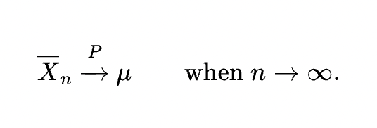
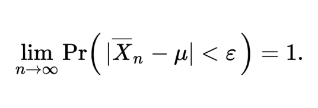
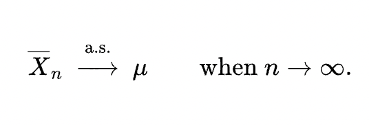
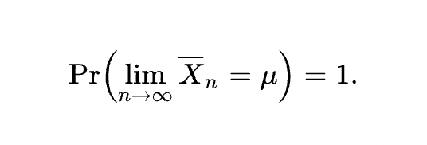
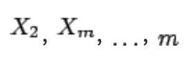
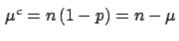
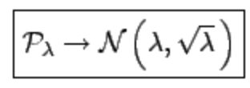
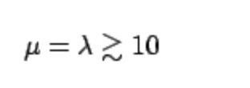
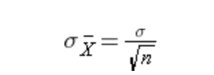

Do a research about the following topics:
- The law of large numbers LLN, the various definitions of convergence
- The convergence of the Binomial to the normal and Poisson distributions
- The central limit theorem [in anticipation of a topic we will study later]
The law of large numbers:
There are two different versions of the law of large numbers that are described below. They are called the strong law of large numbers and the weak law of large numbers.
The weak law of large numbers (also called Khinchin’s law) states that the sample average converges in probability towards the expected value 
That is, for any positive number ε, 
Interpreting this result, the weak law states that for any nonzero margin specified (ε), no matter how small, with a sufficiently large sample there will be a very high probability that the average of the observations will be close to the expected value; that is, within the margin.
The strong law of large numbers (also called Kolmogorov’s law) states that the sample average converges almost surely to the expected value 
That is, 
What this means is that the probability that, as the number of trials n goes to infinity, the average of the observations converges to the expected value, is equal to one. [1]
Convergence of random variables
We’ve previously mentioned “converges in probability”, but what that means?
In probability theory, there exist several different notions of convergence of random variables.
Convergence in distribution:
With this mode of convergence, we increasingly expect to see the next outcome in a sequence of random experiments becoming better and better modeled by a given probability distribution.
Convergence in distribution is the weakest form of convergence typically discussed, since it is implied by all other types of convergence mentioned in this article. However, convergence in distribution is very frequently used in practice; most often it arises from application of the central limit theorem.
Convergence in probability:
The basic idea behind this type of convergence is that the probability of an “unusual” outcome becomes smaller and smaller as the sequence progresses.
The concept of convergence in probability is used very often in statistics. For example, an estimator is called consistent if it converges in probability to the quantity being estimated. Convergence in probability is also the type of convergence established by the weak law of large numbers.
Almost sure convergence:
This is the type of stochastic convergence that is most similar to pointwise convergence known from elementary real analysis. [2]
This is the type of convergence established by the strong law of large numbers.
The convergence of the Binomial to the normal and Poisson distributions
Another important application of the theorem is that the binomial and the Poisson distribution can be approximated, for “large numbers”, by a normal distribution. This is a general result, valid for all distributions which have the reproductive property under the sum. Distributions of this kind are the binomial, the Poisson and the X2.
Let us go into more detail:
X1
The reproductive property of the binomial states that if 
are n(i) independent variables, each following a binomial distribution of parameter Y = ∑i Xi and p, then their sum n= ∑i ni also follows a binomial distribution with parameters u = np and p. It is easy to be convinced of this property without any mathematics. Just think of what happens if one tosses bunches of three, of five and of ten coins, and then one considers the global result: a binomial with a large (v) can then always be seen as a sum of many binomials with smaller Y = ∑i Xi. The application of the central limit theorem is straightforward, apart from deciding when the convergence is acceptable. The parameters on which one has to base a judgment are in this case
and the complementary quantity ~> 10.
If they are both 
then the approximation starts to be reasonable. 
Central limit theorem
The central limit theorem states that if you have a population with mean μ and standard deviation σ and take sufficiently large random samples from the population with replacement, then the distribution of the sample means will be approximately normally distributed. This will hold true regardless of whether the source population is normal or skewed, provided the sample size is sufficiently large (usually n > 30). If the population is normal, then the theorem holds true even for samples smaller than 30. In fact, this also holds true even if the population is binomial, provided that min(np, n(1-p))> 5, where n is the sample size and p is the probability of success in the population. This means that we can use the normal probability model to quantify uncertainty when making inferences about a population mean based on the sample mean.
For the random samples we take from the population, we can compute the mean of the sample means:
and the standard deviation of the sample means: 
In order for the result of the CLT to hold, the sample must be sufficiently large (n > 30). Again, there are two exceptions to this. If the population is normal, then the result holds for samples of any size (i..e, the sampling distribution of the sample means will be approximately normal even for samples of size less than 30)
"Generate and represent m “sample paths” of n point each (m, n are program parameters), where each point represents a pair of:
time index t, and relative frequency of success f(t),
where f(t) is the sum of t Bernoulli random variables with distribution B(x, p) = p^x(1-p)^(1-x) observed at the various times up to t: j=1, …, t..
See also what happens if you replace the relative frequency f(t) with the absolute frequency n(t) or by standard relative frequency: (f(t)-p) / sqrt(p(1-p)/t) [ or some “normalized” sum of bernoulli r.v.’s, eg. n(t) / Math.sqrt(t) ]"
With this program we deal as a core topic with the generation of a path from a sequence of Bernoulli random variables.
Each point of the path represents the mean (computed with the Knuth algorithm) of all the sampled Bernoulli variables for that path so far. Inside the viewport, a line is drawn between two points. Also, for each path, we store in two different lists the mean of the first j elements and all the n elements. Each element of the lists is added while we’re computing the path it is related to.
Those lists will contain all the points that will be used to draw the two lateral histograms at position j and n (the actual position is scaled accordingly to the size of the viewport).
Those lists will also be used to compute the absolute and relative frequencies of the points falling into the range.
Finally, we display the theoretical probability and the range with appropriate lines.
"Do a web research about the various methods proposed to compute the running median (one pass, online algorithms).
Store (cite all sources and attributions) the algorithm(s) that you think is(are) a good candidate, explaining briefly how it works"
We’re interested in finding an efficient algorithm for the computation of the running median (i.e. where new data comes in a stream).
The naive approach in computing the running median makes use of a sorted array to store all the observations. To retrieve the median, we simply check for the element at position n/2.
While being intuitive, this approach is particularly bad since, for each new element added into the array, we need to sort the entire array again.
Another approach would be to use an unsorted array and running the quickselect algorithm, which allows us to efficiently find the k-th smallest element in our array.
This algorithm can make sense in some applications, especially where we have to compute the median statically; however it is still a bad solution for our setting: we are essentially throwing away all the work done with previous computations of the same algorithm each time a new element is added.
Note also that using intrinsecally static structures as array requires even more performance overhead: upon the insertion of new elements, we might have to resize our array dynamically. If there is no enough contiguous memory at the end of our array, we need to copy everything stored so far into a new location.
We could change our data structure and move to lists. By using a pointer to the middle of the structure, we are able to find the median after each insertion in O(1). Each insertion takes O(n). This is already a good solution, as we’re now able to keep an ordered structure of our data dynamically by also using what we’ve previously done, and it is also a really intuitive online algorithm. A demonstration of this approach can be found in the computation of quartiles in later versions of the StatApp.
We can also improve the performance of the insertion of new elements.
We could use a combination of a min-heap with a max-heap. Those data structures have the following properties:
the min-heap property: the value of each node is greater than or equal to the value of its parent, with the minimum-value element at the root.
the max-heap property: the value of each node is less than or equal to the value of its parent, with the maximum-value element at the root.
With a combination of the two, we can keep our current median element to be on top of one of the heaps after each insertion (while keeping them balanced), granting us access to it with complexity O(1) after each insertion as before. But insertion would only take O(log n)!